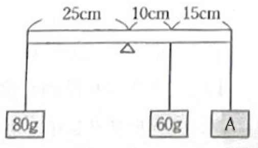
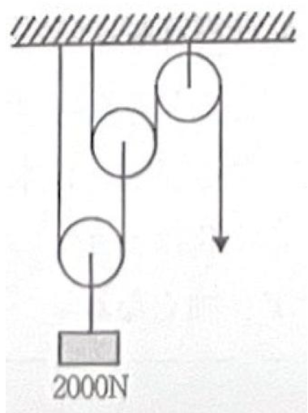
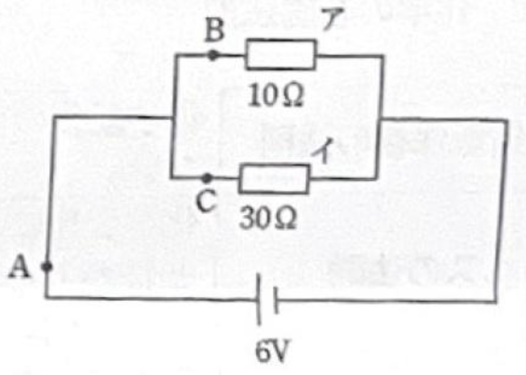
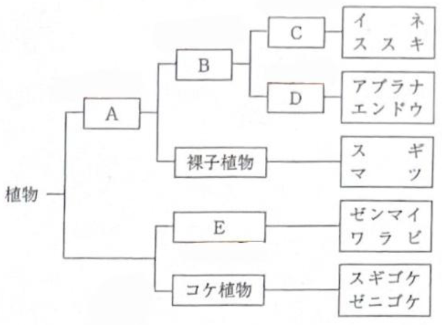
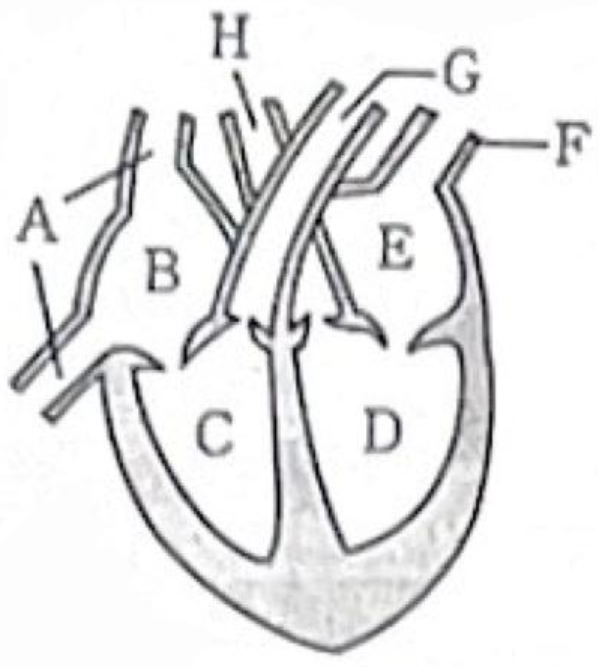
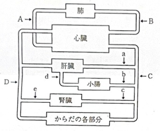

演習問題
物理（力・電気）
No.1
図のように、つり合っているてこがある。Aの重りは何gか。
ただし、棒およびひもの重さは考えないものとする。
(左側: 80g×25cm) = (右側: 60g×10cm + xg×25cm)
ただし、棒およびひもの重さは考えないものとする。
(左側: 80g×25cm) = (右側: 60g×10cm + xg×25cm)

【解答】
力のモーメントのつり合い
(左回りのモーメント) = (右回りのモーメント)
$80 \times 25 = 60 \times 10 + x \times 25$
$2000 = 600 + 25x$
$25x = 1400$
$x = 56$
答え： 56g
(左回りのモーメント) = (右回りのモーメント)
$80 \times 25 = 60 \times 10 + x \times 25$
$2000 = 600 + 25x$
$25x = 1400$
$x = 56$
答え： 56g
No.2
図のように、2つの動滑車を使って2000Nのおもりを引き上げた。滑車とひもの重さや摩擦は無視する。ひもを引いて、おもりを引き上げるのに必要な力は何Nか。

【解答】
動滑車を1つ使うと力は半分になる。
1つ目： $2000 \div 2 = 1000\text{N}$
2つ目： $1000 \div 2 = 500\text{N}$
答え： 500N
1つ目： $2000 \div 2 = 1000\text{N}$
2つ目： $1000 \div 2 = 500\text{N}$
答え： 500N
No.3
100V用400Wの電熱線を、100Vの電源につないだ。
(1) 電熱線を流れる電流は何Aか。
(2) 電熱線の抵抗は何Ωか。
(1) 電熱線を流れる電流は何Aか。
(2) 電熱線の抵抗は何Ωか。

【解答】
(1) 電力 $W = V \times I$ より、$400 = 100 \times I \rightarrow I = 4\text{A}$
答え： 4A
答え： 4A
(2) オームの法則 $V = I \times R$ より、$100 = 4 \times R \rightarrow R = 25\Omega$
答え： 25Ω
答え： 25Ω
No.4
図のように、10Ωの抵抗アと30Ωの抵抗イを並列につなぎ、6Vの電源をつないだ。
(1) 抵抗ア、イにかかる電圧を求めよ。
(2) 点Aを流れる電流の大きさを求めよ（抵抗ア）。
(3) 点B，Cを流れる電流の大きさを求めよ（B:抵抗イ, C:全体）。
(1) 抵抗ア、イにかかる電圧を求めよ。
(2) 点Aを流れる電流の大きさを求めよ（抵抗ア）。
(3) 点B，Cを流れる電流の大きさを求めよ（B:抵抗イ, C:全体）。

【解答】
(1) 並列回路では電圧は等しい。答え： アもイも 6V
(2) 抵抗ア（点A）：$I = 6\text{V} \div 10\Omega = $ 0.6A
(3) 抵抗イ（点B）：$I = 6\text{V} \div 30\Omega = 0.2\text{A}$
全体（点C）：$0.6 + 0.2 = $ 0.8A
全体（点C）：$0.6 + 0.2 = $ 0.8A
化学（物質・気体）
No.5
プロパン $C_3H_8$ 2.2gを空気中で燃焼させたところ、二酸化炭素と水が生じた。(原子量 H=1.0, C=12.0, O=16.0)
(1) この化学変化を化学反応式で示せ。
(2) このとき生じた水の質量は何gか。
(1) この化学変化を化学反応式で示せ。
(2) このとき生じた水の質量は何gか。
【解答】
(1) $C_3H_8 + 5O_2 \rightarrow 3CO_2 + 4H_2O$
(2) プロパンの分子量 $= 12 \times 3 + 1 \times 8 = 44$。
2.2gは $2.2 \div 44 = 0.05$mol。
反応式より、プロパン1molから水4molができるので、水は $0.05 \times 4 = 0.2$mol 生成。
水 $H_2O$ の分子量は18。質量は $0.2 \times 18 = $ 3.6g
2.2gは $2.2 \div 44 = 0.05$mol。
反応式より、プロパン1molから水4molができるので、水は $0.05 \times 4 = 0.2$mol 生成。
水 $H_2O$ の分子量は18。質量は $0.2 \times 18 = $ 3.6g
No.6
次の物質を混合物と純物質に分類せよ。
ア.石油 イ.塩化ナトリウム ウ.ドライアイス エ.水蒸気 オ.空気
ア.石油 イ.塩化ナトリウム ウ.ドライアイス エ.水蒸気 オ.空気
【解答】
混合物： ア(石油), オ(空気)
純物質： イ, ウ, エ (NaCl, CO2, H2O)
純物質： イ, ウ, エ (NaCl, CO2, H2O)
No.7
次の現象に最も関係が深いものをア～カから選べ。
[ ア.蒸発 イ.凝固 ウ.凝縮 エ.融解 オ.沸騰 カ.昇華 ]
(1) 冷えたコップの周りに水滴がつく。
(2) 洗濯物が乾く。
(3) 外圧を低くしたり温度を高くしたりすると、液体の内部で蒸発がおこる。
[ ア.蒸発 イ.凝固 ウ.凝縮 エ.融解 オ.沸騰 カ.昇華 ]
(1) 冷えたコップの周りに水滴がつく。
(2) 洗濯物が乾く。
(3) 外圧を低くしたり温度を高くしたりすると、液体の内部で蒸発がおこる。
【解答】
(1) 気体→液体：ウ (凝縮)
(2) 液体→気体（表面から）：ア (蒸発)
(3) 液体→気体（内部から）：オ (沸騰)
No.8
次の水溶液のうち、酸性を示すものをすべて選べ。
①食塩水 ②石灰水 ③塩酸 ④アンモニア水 ⑤食酢
①食塩水 ②石灰水 ③塩酸 ④アンモニア水 ⑤食酢
【解答】
酸性：③塩酸、⑤食酢（酢酸）
中性：①食塩水
アルカリ性：②石灰水、④アンモニア水
答え： ③, ⑤
中性：①食塩水
アルカリ性：②石灰水、④アンモニア水
答え： ③, ⑤
No.9
次の(1)～(5)の特徴にあてはまる気体を、以下の語群から選べ。
[ 水素, アンモニア, 二酸化炭素, 酸素, 窒素 ]
(1) 鼻をさすような刺激臭があり、水によく溶けて水溶液はアルカリ性を示す。
(2) 気体の中で最も軽く、この気体を集めた試験管にマッチの炎を近づけると、気体が燃えて水になる。
(3) 空気よりわずかに軽い。空気の体積の約80％を占め、常温ではほとんど化学変化をしない。
(4) 水に少し溶けて、水溶液は酸性を示す。石灰水の中に通すと白く濁る。
(5) 無色無臭で水に溶けにくく、気体そのものは燃えないが他の物質を燃やす働きをもつ。
[ 水素, アンモニア, 二酸化炭素, 酸素, 窒素 ]
(1) 鼻をさすような刺激臭があり、水によく溶けて水溶液はアルカリ性を示す。
(2) 気体の中で最も軽く、この気体を集めた試験管にマッチの炎を近づけると、気体が燃えて水になる。
(3) 空気よりわずかに軽い。空気の体積の約80％を占め、常温ではほとんど化学変化をしない。
(4) 水に少し溶けて、水溶液は酸性を示す。石灰水の中に通すと白く濁る。
(5) 無色無臭で水に溶けにくく、気体そのものは燃えないが他の物質を燃やす働きをもつ。
【解答】
(1) 刺激臭、アルカリ性 $\rightarrow$ アンモニア
(2) 最も軽い、燃えると水 $\rightarrow$ 水素
(3) 空気の80% $\rightarrow$ 窒素
(4) 石灰水を白く濁らせる $\rightarrow$ 二酸化炭素
(5) 助燃性（ものを燃やす働き） $\rightarrow$ 酸素
生物
No.10
次の図は、植物の分類を示したものである。空欄A～Eにあてはまる分類上の名称を答えよ。

【解答】
A: 種子植物 (花を咲かせ種子で増える)
B: 被子植物 (胚珠が子房に包まれている)
C: 単子葉類 (子葉が1枚、ひげ根、平行脈)
D: 双子葉類 (子葉が2枚、主根・側根、網状脈)
E: シダ植物 (胞子で増える、維管束あり)
No.11
右の図は、ヒトの心臓の断面を示したものである。
(1) 図のCの部分の名称を答えよ。
(2) 図のA～Hから静脈をすべて選べ。
(3) 酸素を多くとり入れた血液が通る道すじを、図のA～Hの記号で示せ。
(1) 図のCの部分の名称を答えよ。
(2) 図のA～Hから静脈をすべて選べ。
(3) 酸素を多くとり入れた血液が通る道すじを、図のA～Hの記号で示せ。

【解答】
(1) Cは心臓の下側（心室）で、全身へ血液を送り出す壁の厚い部分。$\rightarrow$ 左心室 (※図の左右反転に注意。向かって右が左心室、左が右心室。設問に合わせてCが右心室か左心室か要確認。通常、全身へ送る最も筋肉が厚いのが左心室)
※元データの解答に基づく補正:
元データでは C=$\rightarrow$右心室 となっています（図の配置に依存）。
元データでは C=$\rightarrow$右心室 となっています（図の配置に依存）。
(2) 心臓に戻ってくる血管＝静脈。
大静脈(A)と肺静脈(F)。 $\rightarrow$ A, F
大静脈(A)と肺静脈(F)。 $\rightarrow$ A, F
(3) 動脈血（酸素が多い）の経路：肺静脈(F) $\rightarrow$ 左心房(E) $\rightarrow$ 左心室(D) $\rightarrow$ 大動脈(H)。
答え： F, E, D, H
答え： F, E, D, H
No.12
右の図は、ヒトの血液の循環経路を示している。
(1) 図中の血管A～Dの中から静脈をすべて選べ。
(2) 図中の血管a～eのうち、グルコース（ブドウ糖）などの栄養分を最も多く含む血液が流れている血管を1つ選べ。
(3) 図中の血管a～eのうち、二酸化炭素以外の不要物が最も少ない血液が流れている血管を1つ選べ。
(1) 図中の血管A～Dの中から静脈をすべて選べ。
(2) 図中の血管a～eのうち、グルコース（ブドウ糖）などの栄養分を最も多く含む血液が流れている血管を1つ選べ。
(3) 図中の血管a～eのうち、二酸化炭素以外の不要物が最も少ない血液が流れている血管を1つ選べ。

【解答】
(1) 心臓へ戻る血管。B, D
(2) 小腸で吸収した養分を肝臓へ運ぶ血管（門脈）。 $\rightarrow$ d
(3) 腎臓で不要物（尿素など）をこし取った後の血管（腎静脈）。 $\rightarrow$ e
No.13-15
No.13 動物と分類名の組合わせとして正しいものを選べ。
①イモリ-は虫類 ②ヤモリ-両生類 ③サンショウウオ-魚類 ④コウモリ-鳥類 ⑤クジラ-哺乳類
No.14 外界の温度が変化しても体温が変わらないもの(恒温動物)をすべて選べ。
①イルカ ②サメ ③ペンギン ④イグアナ ⑤カエル
No.15 外骨格をもつものを選べ。
①アサリ ②ウニ ③イカ ④ヒトデ ⑤カニ
①イモリ-は虫類 ②ヤモリ-両生類 ③サンショウウオ-魚類 ④コウモリ-鳥類 ⑤クジラ-哺乳類
No.14 外界の温度が変化しても体温が変わらないもの(恒温動物)をすべて選べ。
①イルカ ②サメ ③ペンギン ④イグアナ ⑤カエル
No.15 外骨格をもつものを選べ。
①アサリ ②ウニ ③イカ ④ヒトデ ⑤カニ
【解答】
No.13: ⑤ クジラ - 哺乳類 (イモリ=両生類, ヤモリ=は虫類)
No.14: 哺乳類・鳥類 ①イルカ, ③ペンギン
No.15: 節足動物など ⑤ カニ
地学
No.16-19
No.16 火山の形：正しい組み合わせ
①富士山-溶岩円頂丘 ②浅間山-盾状火山 ③昭和新山-盾状火山 ④キラウェア山-成層火山 ⑤有珠山-溶岩円頂丘
No.17 火山岩であるものをすべて選べ
①流紋岩 ②安山岩 ③花こう岩 ④斑れい岩 ⑤玄武岩
No.18 粘性が大きくドーム型の火山
①富士山 ②有珠山 ③マウナロア山 ④桜島 ⑤浅間山
No.19 マグマが地表または地表近くで急に冷やされてできた岩石（火山岩）
①せん緑岩 ②斑れい岩 ③玄武岩 ④流紋岩 ⑤花こう岩
①富士山-溶岩円頂丘 ②浅間山-盾状火山 ③昭和新山-盾状火山 ④キラウェア山-成層火山 ⑤有珠山-溶岩円頂丘
No.17 火山岩であるものをすべて選べ
①流紋岩 ②安山岩 ③花こう岩 ④斑れい岩 ⑤玄武岩
No.18 粘性が大きくドーム型の火山
①富士山 ②有珠山 ③マウナロア山 ④桜島 ⑤浅間山
No.19 マグマが地表または地表近くで急に冷やされてできた岩石（火山岩）
①せん緑岩 ②斑れい岩 ③玄武岩 ④流紋岩 ⑤花こう岩
【解答】
No.16: ⑤ 有珠山 - 溶岩円頂丘(ドーム) (昭和新山も溶岩円頂丘)
No.17: ①流紋岩, ②安山岩, ⑤玄武岩
No.18: 粘性が大きい＝ドーム型 ② 有珠山 (または昭和新山)
No.19: ③玄武岩, ④流紋岩 (斑れい岩等は深成岩)
No.20-21
No.20 示準化石をすべて選べ
①アンモナイト ②シジミ ③フズリナ ④サンゴ ⑤アサリ
No.21 次のア～キのうち、どの化石が含まれていれば(1)，(2)の地層で堆積したといえるか。
ア.フズリナ イ.アサリ ウ.シジミ エ.アンモナイト オ.サンゴ カ.ビカリア キ.ハマグリ
(1)河口や湖の水底で堆積した地層
(2)恐竜が生きていた時代に堆積した地層
①アンモナイト ②シジミ ③フズリナ ④サンゴ ⑤アサリ
No.21 次のア～キのうち、どの化石が含まれていれば(1)，(2)の地層で堆積したといえるか。
ア.フズリナ イ.アサリ ウ.シジミ エ.アンモナイト オ.サンゴ カ.ビカリア キ.ハマグリ
(1)河口や湖の水底で堆積した地層
(2)恐竜が生きていた時代に堆積した地層
【解答】
No.20: 時代がわかるもの ①アンモナイト, ③フズリナ
No.21: (1) 淡水・汽水環境を示すもの ウ (シジミ)
(2) 中生代を示すもの エ (アンモナイト)
(2) 中生代を示すもの エ (アンモナイト)